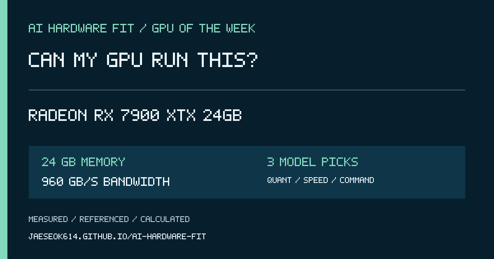

AI HARDWARE FIT · 2026-11-09
Can my GPU run this?
Apple M4 Max 128GB 통합메모리

128 GB memory · 546 GB/s memory bandwidth
Speed is a planning range. Open the result to see whether it is measured, calibrated, referenced, or calculated.